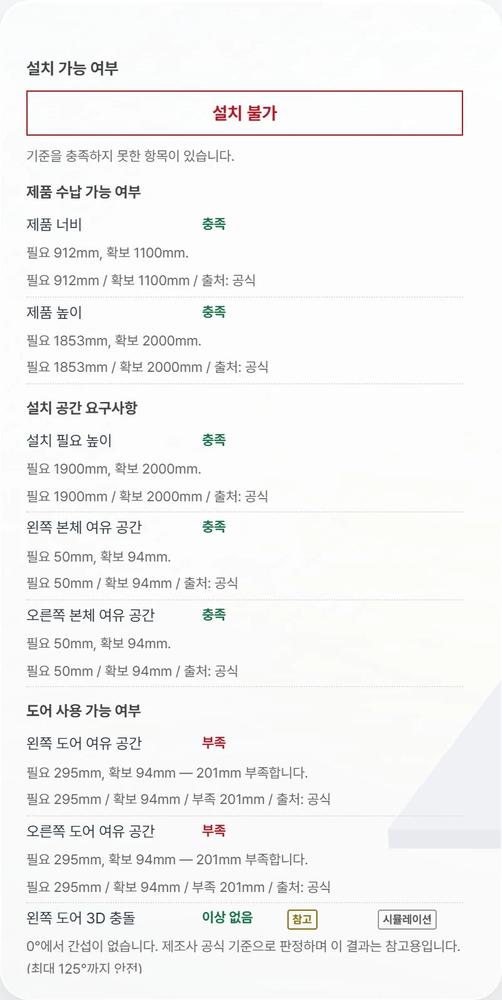
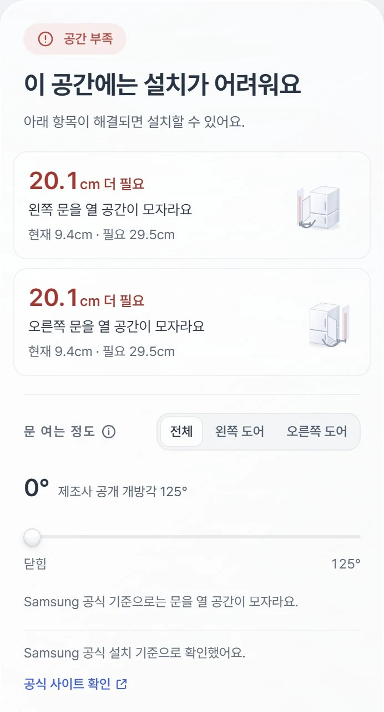

01결과
보고서 대신 답을 먼저, 모자란 만큼을 가장 크게 보여줬어요
- 문제
- 결론이 설정 아래 표에 있었고, 통과한 항목과 실패한 항목이 같은 무게로 나열됐어요.
- 관찰
- ‘필요 295mm, 확보 94mm’는 계산으로는 정확하지만, 사용자에게 무엇을 바꿔야 하는지 알려주지 않았어요.
- 변경
- 한 줄의 답, 얼마나 더 필요한지, 무엇이 부족한지, 현재와 필요, 누구의 기준인지 순서로 바꾸고 통과한 항목은 목록에서 뺐어요.
- 결과
- ‘20.1cm 더 필요’가 먼저 보여서, 읽자마자 무엇이 얼마나 모자란지 알 수 있어요.
Before

After

AI가 도운 일엔진 용어가 사용자 화면에 새어 나오면 자동 검사가 실패하도록 만들었어요.
직접 판단한 일사용자에게 보이는 문구는 한 곳에서만 관리하고, 계산 용어는 화면에 쓰지 않기로 정했어요.